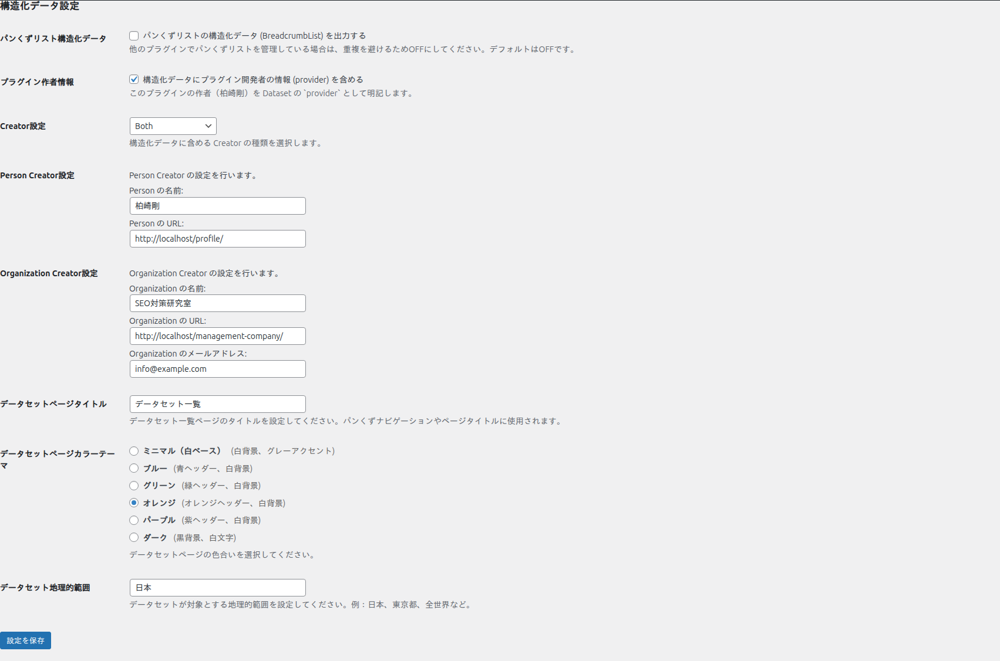
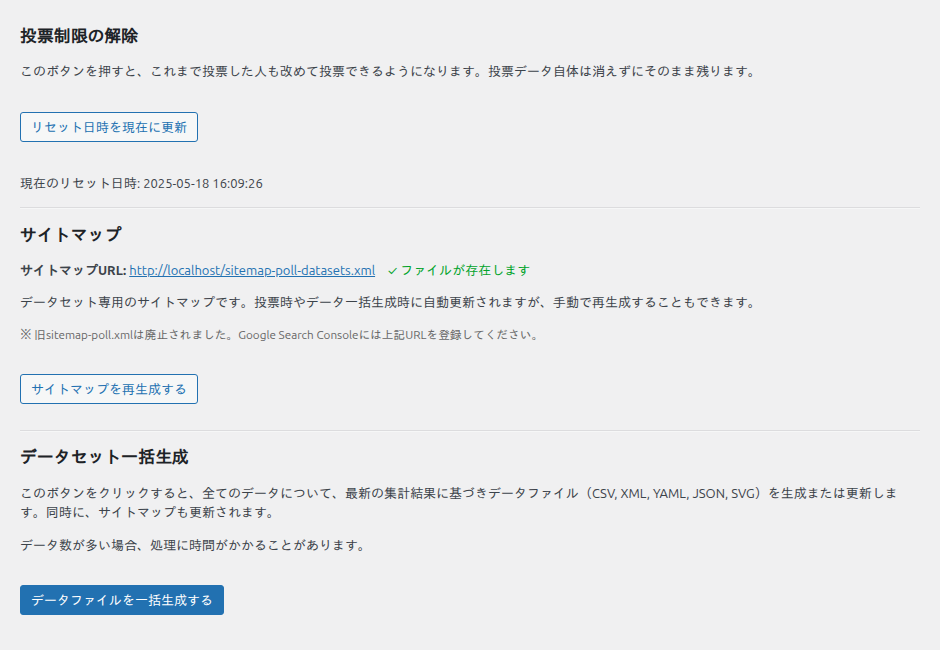

基本設定ガイド
左メニューの「Kashiwazaki SEO Poll」を開くと、すべてのアンケートに共通する設定と、便利な管理ツールがまとまっています。ここでは各項目を、初期値のままで良いものも含めて丁寧に説明します。
構造化データ設定
この一群の設定は、Google データセット検索向けの構造化データ（誰が作ったデータか、どんな地域のデータか等）に反映されます。

パンくずリスト構造化データ
データセットページにパンくずリスト（BreadcrumbList）の構造化データを出力するかどうかです。初期値は OFF。他のプラグイン（Yoast SEO など）でパンくずを管理している場合は、重複を避けるため OFF のままにしてください。
プラグイン作者情報（provider）
構造化データに、プラグイン開発者の情報を provider（提供者）として含めるかどうかです。オンにすると、Dataset の provider に開発者情報が明記されます。
Creator 設定
データの作成者（creator）として、誰を明示するかを選びます。
- Organization のみ（初期値）：組織名だけを creator にします。
- Person のみ：個人名だけを creator にします。
- 両方：個人と組織の両方を creator にします。
選んだ種類に応じて、下に「Person の名前・URL」「Organization の名前・URL・メールアドレス」の入力欄が表示されます。組織名・URL・メールアドレスの初期値には、サイトの名称・URL・管理者メールが自動で入ります。
データセットページタイトル
/datasets/ の一覧ページに表示されるタイトルです（初期値は「集計データ一覧」）。パンくずやページ見出しに使われます。
データセットページ カラーテーマ
データセット詳細ページ（SVG 画像や一覧の配色）の色合いを、6種類から選べます。
- ミニマル（初期値・白ベース、グレーのアクセント）
- ブルー（青ヘッダー、白背景）
- グリーン（緑ヘッダー、白背景）
- オレンジ（オレンジヘッダー、白背景）
- パープル（紫ヘッダー、白背景）
- ダーク（黒背景、白文字）
データセット地理的範囲
データが対象とする地理的範囲を入力します（初期値は「日本」）。構造化データの spatialCoverage に反映されます。例：日本、東京都、全世界 など。
管理ツール
設定ページの下部には、運用に役立つ3つのツールがあります。

投票制限の解除
「リセット日時を現在に更新」を押すと、これまで投票した人も、もう一度投票できるようになります。過去の投票データ自体は消えずに残ります。定期アンケート（毎月同じ質問をとる等）で、全員に再投票してもらいたいときに使います。現在のリセット日時も表示されます。
特定の1つのアンケートだけをリセットしたい場合は、この共通ツールではなく、各アンケート編集画面の「投票データリセット」を使います（アンケートの作成参照）。
サイトマップ
データセット専用サイトマップ sitemap-poll-datasets.xml の URL と、ファイルの存在状況が表示されます。サイトマップは投票時やデータ一括生成時に自動更新されますが、「サイトマップを再生成する」で手動更新もできます。Google Search Console には、この URL を登録してください。
データセット一括生成
「データファイルを一括生成する」を押すと、公開中のすべてのアンケートについて、最新の集計結果をもとに5形式（CSV・XML・YAML・JSON・SVG）のデータファイルとサイトマップをまとめて生成・更新します。プラグイン導入直後や、大量のデータを一度に作り直したいときに便利です。データ数が多い場合は処理に時間がかかることがあります。